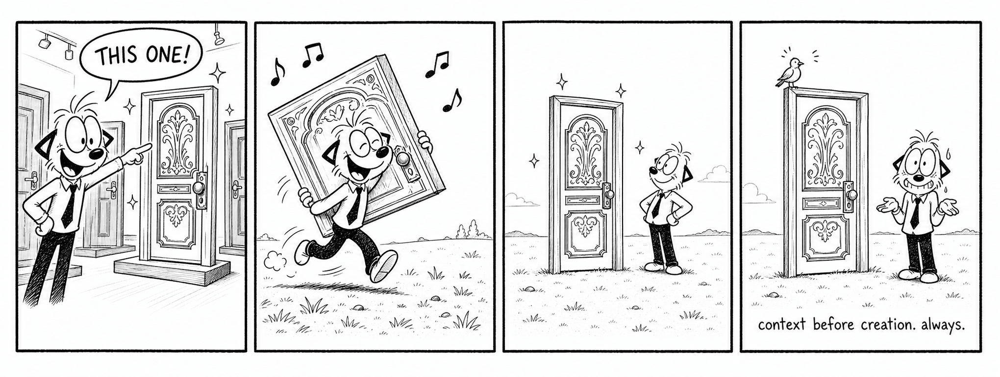
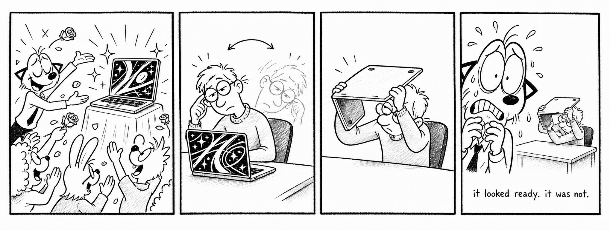
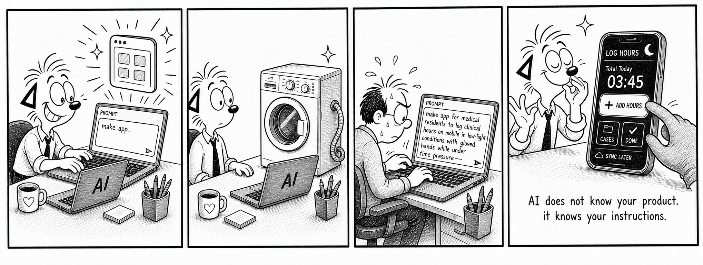
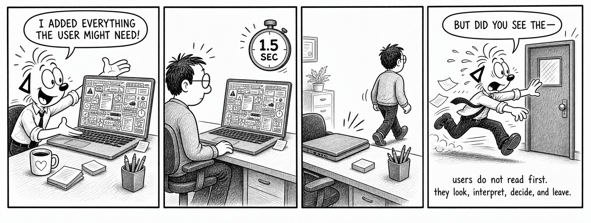
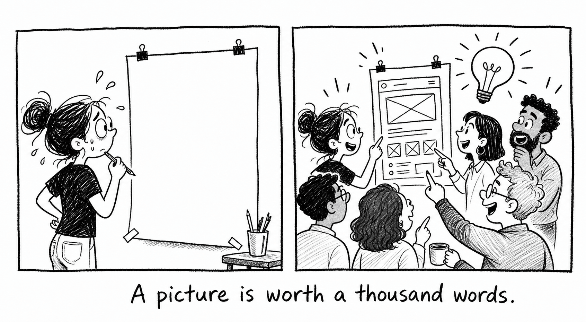
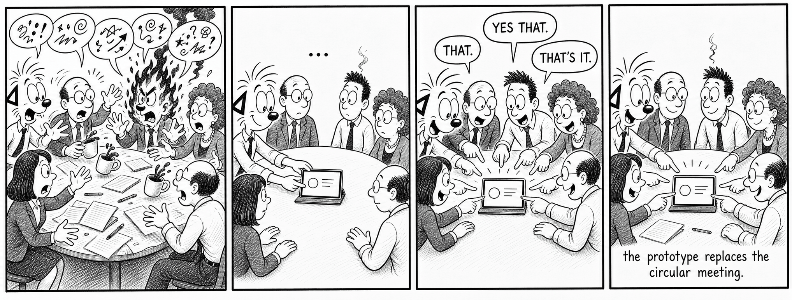
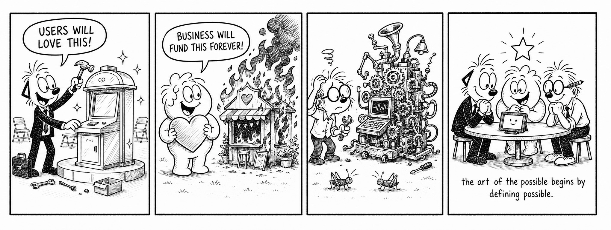
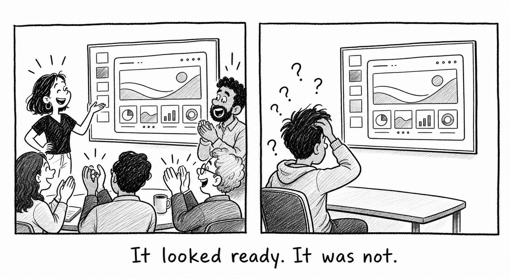
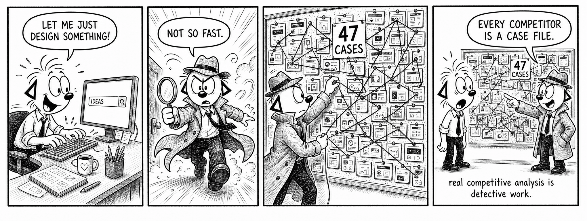

That is not the same as making the right experience.
01 Start with context02 Prototype to learn03 Align around evidence
Field notes from the book
Eight shifts that change the work.
Short lessons for product leaders, designers, researchers, and teams using AI to move from possibility to a decision worth making.
SHIFT 01
Context before creation. Always.
A polished prototype can still solve the wrong problem. Define the user, environment, constraints, value, and decision before asking AI to produce a screen.
Ask first: What must be true for this to work?

Creation without context is decoration.
SHIFT 02
Useful beats ready.
Visual polish creates confidence before the thinking has earned it. Treat the first prototype as a question the team can see—not an answer everyone must defend.
Use fidelity deliberately, not automatically.

It looked ready. It was not.
SHIFT 03
Your prompt is a product brief.
AI does not know your product. It knows your instructions. Add the audience, context of use, constraints, content, risks, and success criteria that shape the real experience.
Better context creates better options.

The quality of the output follows the quality of the context.
SHIFT 04
Design for the first 1.5 seconds.
People scan, interpret, decide, and sometimes leave before they read. Make hierarchy, meaning, and the next action visible before adding more explanation.
Comprehension is a design requirement.

Users do not read first.
SHIFT 05
Make the invisible visible.
A prototype gives abstract language somewhere to land. Teams can point, react, compare, and improve because the idea is no longer trapped in one person’s head.
A picture turns opinions into a working conversation.

A picture is worth a thousand words—and a better meeting.
SHIFT 06
Ask what is missing.
The strongest person in the room is not always the one with the fastest idea. It is often the one who surfaces the risk, dependency, or overlooked user that changes the decision.
Curiosity is a leadership behavior.
The question that changes the room.
SHIFT 07
Prototype the alignment.
The prototype is not only a product artifact. It is a collaboration tool that replaces circular debate with a shared object the room can evaluate together.
Move the conversation from “I think” to “we can see.”

The prototype replaces the circular meeting.
SHIFT 08
Balance all three kinds of value.
A desirable idea that cannot be sustained will fail. A profitable idea nobody understands will fail too. Define user value, business value, and operational feasibility together.
The art of the possible begins by defining possible.

The three-value model.

Ready is a team judgment.A screen can look complete long before the people, purpose, and evidence agree.

Research before invention.Every competitor is a case file: look for patterns, gaps, promises, and proof.
Go deeper
Turn the lessons into a working practice.
UX Mindset: AI-Powered Prototyping connects these principles into a practical approach for moving faster without leaving users, context, or collaboration behind.